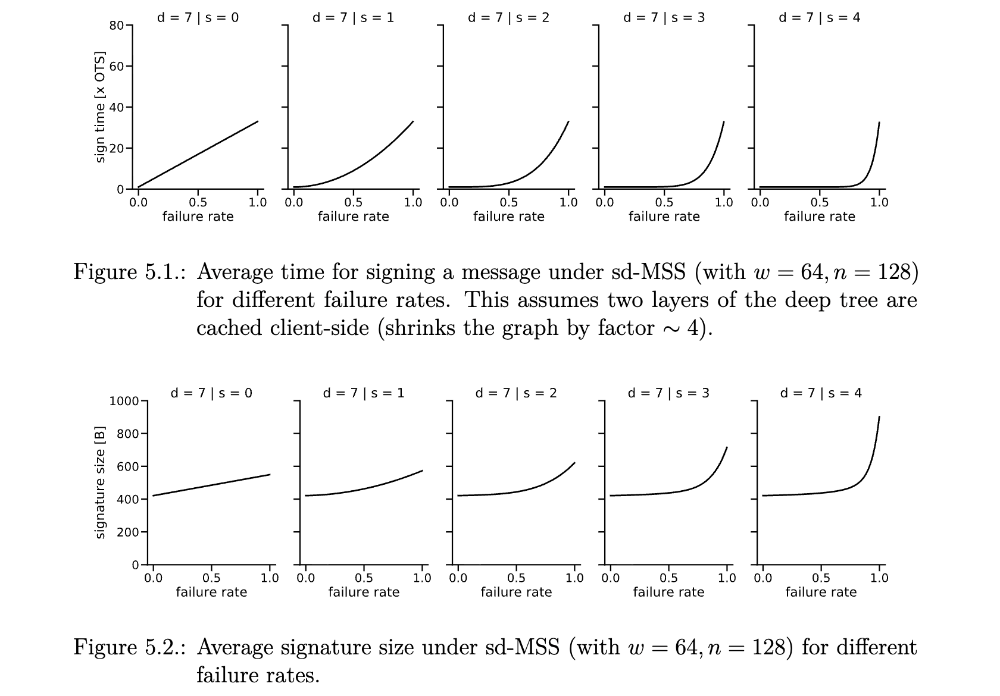

Quentin M. Kniep
M.Sc. Thesis
Security keys used in two-factor authentication are based on digital signatures. These signatures are currently based on elliptic curves or other problems which will no longer be hard to solve on quantum computers. This thesis looks at Google's OpenSK specifically, assessing steps for making it post-quantum secure. Sequentially-updatable Merkle trees and Merkle tree forests are presented as theoretical generalizations of Merkle trees. A novel hash-based few-time signature scheme is then proposed, which is based on sequentially-updatable Merkle trees and a variant of W-OTS+. An implementation of this scheme is analyzed and compared to lattice-based and classical cryptography regarding its feasibility for use in FIDO authenticators and similar applications.

@misc{kniep2021msc,
author = {Q.M. Kniep},
title = {Post-Quantum {FIDO2} Security Keys using Hash-Based Signatures},
year = {2021},
howpublished = {M.Sc. Thesis, Humboldt-Universit{\"a}t zu Berlin}
}